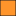

<!doctype html>
<html lang="en">
    <head>
        <meta charset="utf-8">
        <meta http-equiv="X-UA-Compatible" content="IE=edge">
        <meta name="viewport" content="initial-scale=1,user-scalable=no,maximum-scale=1,width=device-width">
        <meta name="mobile-web-app-capable" content="yes">
        <meta name="apple-mobile-web-app-capable" content="yes">
        <link rel="stylesheet" href="css/leaflet.css"><link rel="stylesheet" href="css/L.Control.Locate.min.css">
        <link rel="stylesheet" href="css/qgis2web.css"><link rel="stylesheet" href="css/fontawesome-all.min.css">
        <link rel="stylesheet" href="css/filter.css">
<link rel="stylesheet" href="css/nouislider.min.css">
        <link rel="stylesheet" href="css/leaflet-control-geocoder.Geocoder.css">
        <link rel="stylesheet" href="css/leaflet-measure.css">
        <style>
        html, body, #map {
            width: 100%;
            height: 100%;
            padding: 0;
            margin: 0;
        }
        </style>
        <title>GEOLOGIE_LASSERRE_CAMEROUN</title>
    </head>
    <body>
        <div id="map">
        </div>
        <script src="js/qgis2web_expressions.js"></script>
        <script src="js/leaflet.js"></script><script src="js/L.Control.Locate.min.js"></script>
        <script src="js/leaflet.rotatedMarker.js"></script>
        <script src="js/leaflet.pattern.js"></script>
        <script src="js/leaflet-hash.js"></script>
        <script src="js/Autolinker.min.js"></script>
        <script src="js/rbush.min.js"></script>
        <script src="js/labelgun.min.js"></script>
        <script src="js/labels.js"></script>
        <script src="js/leaflet-control-geocoder.Geocoder.js"></script>
        <script src="js/leaflet-measure.js"></script>
        <script src="js/tailDT.js"></script>
<script src="js/nouislider.min.js"></script>
<script src="js/wNumb.js"></script>
        <script src="data/formation_geologique_1.js"></script>
        <script src="data/failles_2.js"></script>
        <script>
        var highlightLayer;
        function highlightFeature(e) {
            highlightLayer = e.target;

            if (e.target.feature.geometry.type === 'LineString') {
              highlightLayer.setStyle({
                color: '#ffff00',
              });
            } else {
              highlightLayer.setStyle({
                fillColor: '#ffff00',
                fillOpacity: 1
              });
            }
            highlightLayer.openPopup();
        }
        var map = L.map('map', {
            zoomControl:true, maxZoom:28, minZoom:1
        }).fitBounds([[1.150358191641768,5.968438941494396],[13.145241446541778,21.216510167357306]]);
        var hash = new L.Hash(map);
        map.attributionControl.setPrefix('<a href="https://github.com/tomchadwin/qgis2web" target="_blank">qgis2web</a> &middot; <a href="https://leafletjs.com" title="A JS library for interactive maps">Leaflet</a> &middot; <a href="https://qgis.org">QGIS</a>');
        var autolinker = new Autolinker({truncate: {length: 30, location: 'smart'}});
        L.control.locate({locateOptions: {maxZoom: 19}}).addTo(map);
        var measureControl = new L.Control.Measure({
            position: 'topleft',
            primaryLengthUnit: 'meters',
            secondaryLengthUnit: 'kilometers',
            primaryAreaUnit: 'sqmeters',
            secondaryAreaUnit: 'hectares'
        });
        measureControl.addTo(map);
        document.getElementsByClassName('leaflet-control-measure-toggle')[0]
        .innerHTML = '';
        document.getElementsByClassName('leaflet-control-measure-toggle')[0]
        .className += ' fas fa-ruler';
        var bounds_group = new L.featureGroup([]);
        function setBounds() {
        }
        map.createPane('pane_OSMStandard_0');
        map.getPane('pane_OSMStandard_0').style.zIndex = 400;
        var layer_OSMStandard_0 = L.tileLayer('http://tile.openstreetmap.org/{z}/{x}/{y}.png', {
            pane: 'pane_OSMStandard_0',
            opacity: 1.0,
            attribution: '<a href="https://www.openstreetmap.org/copyright">© OpenStreetMap contributors, CC-BY-SA</a>',
            minZoom: 1,
            maxZoom: 28,
            minNativeZoom: 0,
            maxNativeZoom: 19
        });
        layer_OSMStandard_0;
        map.addLayer(layer_OSMStandard_0);
        function pop_formation_geologique_1(feature, layer) {
            layer.on({
                mouseout: function(e) {
                    for (i in e.target._eventParents) {
                        e.target._eventParents[i].resetStyle(e.target);
                    }
                    if (typeof layer.closePopup == 'function') {
                        layer.closePopup();
                    } else {
                        layer.eachLayer(function(feature){
                            feature.closePopup()
                        });
                    }
                },
                mouseover: highlightFeature,
            });
            var popupContent = '<table>\
                    <tr>\
                        <td colspan="2">' + (feature.properties['lithologie'] !== null ? autolinker.link(feature.properties['lithologie'].toLocaleString()) : '') + '</td>\
                    </tr>\
                </table>';
            layer.bindPopup(popupContent, {maxHeight: 400});
        }

        function style_formation_geologique_1_0(feature) {
            switch(String(feature.properties['q2wHide_type_2'])) {
                case 'Formations effusives':
                    return {
                pane: 'pane_formation_geologique_1',
                opacity: 1,
                color: 'rgba(35,35,35,1.0)',
                dashArray: '',
                lineCap: 'butt',
                lineJoin: 'miter',
                weight: 1.0, 
                fill: true,
                fillOpacity: 1,
                fillColor: 'rgba(215,87,108,1.0)',
                interactive: true,
            }
                    break;
                case 'Formations plutoniques':
                    return {
                pane: 'pane_formation_geologique_1',
                opacity: 1,
                color: 'rgba(35,35,35,1.0)',
                dashArray: '',
                lineCap: 'butt',
                lineJoin: 'miter',
                weight: 1.0, 
                fill: true,
                fillOpacity: 1,
                fillColor: 'rgba(255,127,0,1.0)',
                interactive: true,
            }
                    break;
                case 'Formations précambriennes':
                    return {
                pane: 'pane_formation_geologique_1',
                opacity: 1,
                color: 'rgba(35,35,35,1.0)',
                dashArray: '',
                lineCap: 'butt',
                lineJoin: 'miter',
                weight: 1.0, 
                fill: true,
                fillOpacity: 1,
                fillColor: 'rgba(141,120,0,1.0)',
                interactive: true,
            }
                    break;
                case 'Formations sédimentaires':
                    return {
                pane: 'pane_formation_geologique_1',
                opacity: 1,
                color: 'rgba(56,128,54,1.0)',
                dashArray: '',
                lineCap: 'butt',
                lineJoin: 'miter',
                weight: 1.0, 
                fill: true,
                fillOpacity: 1,
                fillColor: 'rgba(77,175,74,0.5294117647058824)',
                interactive: true,
            }
                    break;
            }
        }
        map.createPane('pane_formation_geologique_1');
        map.getPane('pane_formation_geologique_1').style.zIndex = 401;
        map.getPane('pane_formation_geologique_1').style['mix-blend-mode'] = 'normal';
        var layer_formation_geologique_1 = new L.geoJson(json_formation_geologique_1, {
            attribution: '',
            interactive: true,
            dataVar: 'json_formation_geologique_1',
            layerName: 'layer_formation_geologique_1',
            pane: 'pane_formation_geologique_1',
            onEachFeature: pop_formation_geologique_1,
            style: style_formation_geologique_1_0,
        });
        bounds_group.addLayer(layer_formation_geologique_1);
        map.addLayer(layer_formation_geologique_1);
        function pop_failles_2(feature, layer) {
            layer.on({
                mouseout: function(e) {
                    for (i in e.target._eventParents) {
                        e.target._eventParents[i].resetStyle(e.target);
                    }
                    if (typeof layer.closePopup == 'function') {
                        layer.closePopup();
                    } else {
                        layer.eachLayer(function(feature){
                            feature.closePopup()
                        });
                    }
                },
                mouseover: highlightFeature,
            });
            var popupContent = '<table>\
                    <tr>\
                        <td colspan="2">' + (feature.properties['type'] !== null ? autolinker.link(feature.properties['type'].toLocaleString()) : '') + '</td>\
                    </tr>\
                </table>';
            layer.bindPopup(popupContent, {maxHeight: 400});
        }

        function style_failles_2_0(feature) {
            switch(String(feature.properties['type'])) {
                case 'Réelle':
                    return {
                pane: 'pane_failles_2',
                opacity: 1,
                color: 'rgba(8,16,23,1.0)',
                dashArray: '',
                lineCap: 'square',
                lineJoin: 'bevel',
                weight: 3.0,
                fillOpacity: 0,
                interactive: true,
            }
                    break;
                case 'Supposée':
                    return {
                pane: 'pane_failles_2',
                opacity: 1,
                color: 'rgba(0,0,0,1.0)',
                dashArray: '',
                lineCap: 'round',
                lineJoin: 'round',
                weight: 2.0,
                fillOpacity: 0,
                interactive: true,
            }
                    break;
            }
        }
        map.createPane('pane_failles_2');
        map.getPane('pane_failles_2').style.zIndex = 402;
        map.getPane('pane_failles_2').style['mix-blend-mode'] = 'normal';
        var layer_failles_2 = new L.geoJson(json_failles_2, {
            attribution: '',
            interactive: true,
            dataVar: 'json_failles_2',
            layerName: 'layer_failles_2',
            pane: 'pane_failles_2',
            onEachFeature: pop_failles_2,
            style: style_failles_2_0,
        });
        bounds_group.addLayer(layer_failles_2);
        map.addLayer(layer_failles_2);
            var title = new L.Control();
            title.onAdd = function (map) {
                this._div = L.DomUtil.create('div', 'info');
                this.update();
                return this._div;
            };
            title.update = function () {
                this._div.innerHTML = '<h2>GEOLOGIE_LASSERRE_CAMEROUN</h2>';
            };
            title.addTo(map);
            var abstract = new L.Control({'position':'topright'});
            abstract.onAdd = function (map) {
                this._div = L.DomUtil.create('div',
                'leaflet-control abstract');
                this._div.id = 'abstract'

                    abstract.show();
                    return this._div;
                };
                abstract.show = function () {
                    this._div.classList.remove("abstract");
                    this._div.classList.add("abstractUncollapsed");
                    this._div.innerHTML = 'quelques failles et formations geologiques dominantes au Cameroun notamment celle de types Effusives, plutoniques, Precanbiens et Sedimentaires';
            };
            abstract.addTo(map);
        var osmGeocoder = new L.Control.Geocoder({
            collapsed: true,
            position: 'topleft',
            text: 'Search',
            title: 'Testing'
        }).addTo(map);
        document.getElementsByClassName('leaflet-control-geocoder-icon')[0]
        .className += ' fa fa-search';
        document.getElementsByClassName('leaflet-control-geocoder-icon')[0]
        .title += 'Search for a place';
        var baseMaps = {};
        L.control.layers(baseMaps,{'failles<br /><table><tr><td style="text-align: center;"></td><td>Réelle</td></tr><tr><td style="text-align: center;"></td><td>Supposée</td></tr></table>': layer_failles_2,'formation_geologique<br /><table><tr><td style="text-align: center;"></td><td>Formations effusives</td></tr><tr><td style="text-align: center;"></td><td>Formations plutoniques</td></tr><tr><td style="text-align: center;"></td><td>Formations précambriennes</td></tr><tr><td style="text-align: center;"></td><td>Formations sédimentaires</td></tr></table>': layer_formation_geologique_1,"OSM Standard": layer_OSMStandard_0,}).addTo(map);
        setBounds();
        var mapDiv = document.getElementById('map');
        var row = document.createElement('div');
        row.className="row";
        row.id="all";
        row.style.height = "100%";
        var col1 = document.createElement('div');
        col1.className="col9";
        col1.id = "mapWindow";
        col1.style.height = "99%";
        col1.style.width = "80%";
        col1.style.display = "inline-block";
        var col2 = document.createElement('div');
        col2.className="col3";
        col2.id = "menu";
        col2.style.display = "inline-block";
        mapDiv.parentNode.insertBefore(row, mapDiv);
        document.getElementById("all").appendChild(col1);
        document.getElementById("all").appendChild(col2);
        col1.appendChild(mapDiv)
        var Filters = {"lithologie": "str","type": "str"};
        function filterFunc() {
          map.eachLayer(function(lyr){
          if ("options" in lyr && "dataVar" in lyr["options"]){
            features = this[lyr["options"]["dataVar"]].features.slice(0);
            try{
              for (key in Filters){
                keyS = key.replace(/[^a-zA-Z0-9_]/g, "")
                if (Filters[key] == "str" || Filters[key] == "bool"){
                  var selection = [];
                  var options = document.getElementById("sel_" + keyS).options
                  for (var i=0; i < options.length; i++) {
                    if (options[i].selected) selection.push(options[i].value);
                  }
                    try{
                      if (key in features[0].properties){
                        for (i = features.length - 1;
                          i >= 0; --i){
                          if (selection.indexOf(
                          features[i].properties[key])<0
                          && selection.length>0) {
                          features.splice(i,1);
                          }
                        }
                      }
                    } catch(err){
                  }
                }
                if (Filters[key] == "int"){
                  sliderVals =  document.getElementById(
                    "div_" + keyS).noUiSlider.get();
                  try{
                    if (key in features[0].properties){
                    for (i = features.length - 1; i >= 0; --i){
                      if (parseInt(features[i].properties[key])
                          < sliderVals[0]
                          || parseInt(features[i].properties[key])
                          > sliderVals[1]){
                            features.splice(i,1);
                          }
                        }
                      }
                    } catch(err){
                    }
                  }
                if (Filters[key] == "real"){
                  sliderVals =  document.getElementById(
                    "div_" + keyS).noUiSlider.get();
                  try{
                    if (key in features[0].properties){
                    for (i = features.length - 1; i >= 0; --i){
                      if (features[i].properties[key]
                          < sliderVals[0]
                          || features[i].properties[key]
                          > sliderVals[1]){
                            features.splice(i,1);
                          }
                        }
                      }
                    } catch(err){
                    }
                  }
                if (Filters[key] == "date"
                  || Filters[key] == "datetime"
                  || Filters[key] == "time"){
                  try{
                    if (key in features[0].properties){
                      HTMLkey = key.replace(/[&\/\\#,+()$~%.'":*?<>{} ]/g, '');
                      startdate = document.getElementById("dat_" +
                        HTMLkey + "_date1").value.replace(" ", "T");
                      enddate = document.getElementById("dat_" +
                        HTMLkey + "_date2").value.replace(" ", "T");
                      for (i = features.length - 1; i >= 0; --i){
                        if (features[i].properties[key] < startdate
                          || features[i].properties[key] > enddate){
                          features.splice(i,1);
                        }
                      }
                    }
                  } catch(err){
                  }
                }
              }
            } catch(err){
            }
          this[lyr["options"]["layerName"]].clearLayers();
          this[lyr["options"]["layerName"]].addData(features);
          }
          })
        }
            document.getElementById("menu").appendChild(
                document.createElement("div"));
            var div_lithologie = document.createElement('div');
            div_lithologie.id = "div_lithologie";
            div_lithologie.className= "filterselect";
            document.getElementById("menu").appendChild(div_lithologie);
            sel_lithologie = document.createElement('select');
            sel_lithologie.multiple = true;
            sel_lithologie.size = 10;
            sel_lithologie.id = "sel_lithologie";
            var lithologie_options_str = "<option value='' unselected></option>";
            sel_lithologie.onchange = function(){filterFunc()};
            lithologie_options_str  += '<option value="Basaltes">Basaltes</option>';
            lithologie_options_str  += '<option value="Batholites gabbroïques associés">Batholites gabbroïques associés</option>';
            lithologie_options_str  += '<option value="Complexe calco-magnésien indifférenci">Complexe calco-magnésien indifférenci</option>';
            lithologie_options_str  += '<option value="Complexe tillitique">Complexe tillitique</option>';
            lithologie_options_str  += '<option value="Conglomérats de Tibati et Borogounous">Conglomérats de Tibati et Borogounous</option>';
            lithologie_options_str  += '<option value="Conglomérats, grès et laves">Conglomérats, grès et laves</option>';
            lithologie_options_str  += '<option value="Crétacé">Crétacé</option>';
            lithologie_options_str  += '<option value="Dolérite">Dolérite</option>';
            lithologie_options_str  += '<option value="Gneiss">Gneiss</option>';
            lithologie_options_str  += '<option value="Granites calco-alcalins à pyroxène">Granites calco-alcalins à pyroxène</option>';
            lithologie_options_str  += '<option value="Granites d&apos;anatexie ou orientés">Granites d&apos;anatexie ou orientés</option>';
            lithologie_options_str  += '<option value="Granites de la série ultime">Granites de la série ultime</option>';
            lithologie_options_str  += '<option value="Granites syntectoniques anciens subconc*">Granites syntectoniques anciens subconc*</option>';
            lithologie_options_str  += '<option value="Granites tardifs, circonscrits, discord">Granites tardifs, circonscrits, discord</option>';
            lithologie_options_str  += '<option value="Granites tardifs, circonscrits, discorda">Granites tardifs, circonscrits, discorda</option>';
            lithologie_options_str  += '<option value="Grès-quartzite, schiste et calcaire">Grès-quartzite, schiste et calcaire</option>';
            lithologie_options_str  += '<option value="Micaschistes">Micaschistes</option>';
            lithologie_options_str  += '<option value="Migmatites">Migmatites</option>';
            lithologie_options_str  += '<option value="Rhyolites, trachytes, andésites">Rhyolites, trachytes, andésites</option>';
            lithologie_options_str  += '<option value="Schistes chloriteux et quartzites">Schistes chloriteux et quartzites</option>';
            lithologie_options_str  += '<option value="Schistes et micaschistes">Schistes et micaschistes</option>';
            lithologie_options_str  += '<option value="Schistes et quartzites">Schistes et quartzites</option>';
            lithologie_options_str  += '<option value="Schistes rouges et micaschistes">Schistes rouges et micaschistes</option>';
            lithologie_options_str  += '<option value="Syénites de la série ultime">Syénites de la série ultime</option>';
            lithologie_options_str  += '<option value="Syénites tardifs, circonscrits, discord">Syénites tardifs, circonscrits, discord</option>';
            lithologie_options_str  += '<option value="Tertiaire et alluvions récentes">Tertiaire et alluvions récentes</option>';
            sel_lithologie.innerHTML = lithologie_options_str;
            div_lithologie.appendChild(sel_lithologie);
            var lab_lithologie = document.createElement('div');
            lab_lithologie.innerHTML = 'lithologie';
            lab_lithologie.className = 'filterlabel';
            div_lithologie.appendChild(lab_lithologie);
            var reset_lithologie = document.createElement('div');
            reset_lithologie.innerHTML = 'clear filter';
            reset_lithologie.className = 'filterlabel';
            reset_lithologie.onclick = function() {
                var options = document.getElementById("sel_lithologie").options;
                for (var i=0; i < options.length; i++) {
                    options[i].selected = false;
                }
                filterFunc();
            };
            div_lithologie.appendChild(reset_lithologie);
            document.getElementById("menu").appendChild(
                document.createElement("div"));
            var div_type = document.createElement('div');
            div_type.id = "div_type";
            div_type.className= "filterselect";
            document.getElementById("menu").appendChild(div_type);
            sel_type = document.createElement('select');
            sel_type.multiple = true;
            sel_type.size = 2;
            sel_type.id = "sel_type";
            var type_options_str = "<option value='' unselected></option>";
            sel_type.onchange = function(){filterFunc()};
            type_options_str  += '<option value="Réelle">Réelle</option>';
            type_options_str  += '<option value="Supposée">Supposée</option>';
            sel_type.innerHTML = type_options_str;
            div_type.appendChild(sel_type);
            var lab_type = document.createElement('div');
            lab_type.innerHTML = 'type';
            lab_type.className = 'filterlabel';
            div_type.appendChild(lab_type);
            var reset_type = document.createElement('div');
            reset_type.innerHTML = 'clear filter';
            reset_type.className = 'filterlabel';
            reset_type.onclick = function() {
                var options = document.getElementById("sel_type").options;
                for (var i=0; i < options.length; i++) {
                    options[i].selected = false;
                }
                filterFunc();
            };
            div_type.appendChild(reset_type);
        resetLabels([layer_formation_geologique_1]);
        map.on("zoomend", function(){
            resetLabels([layer_formation_geologique_1]);
        });
        map.on("layeradd", function(){
            resetLabels([layer_formation_geologique_1]);
        });
        map.on("layerremove", function(){
            resetLabels([layer_formation_geologique_1]);
        });
        </script>
    </body>
</html>
